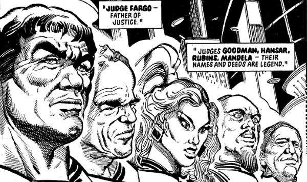

Also known as the Father of Justice (as he was the first Chief Judge of Mega-City One), Judge Eustace Fargo's DNA was used to clone Dredd, his clone-brother Rico & Kraken. Dredd's DNA was then used to clone Judge Rico, (ex-Cadet) Dolman and (ex-Cadet) Jessica Paris (from The Forsaken).
Judge Fargo is first shown (at a distance) in his tomb within the Grand Hall of Justice (beneath which is a secret tunnel), both in The Day the Law Died and in The Apocalypse War. We first see his face in flashback during Dredd Angel (and, presumably, this is also Dredd's face) and the fullest back story to his era is given in Origins.
Art by Ron Smith
| Story Title | Parts | Pages | w indicates a wraparound coverCovers | Year(s) | Issues | Writer | Artist | Colourist | Letterer |
|---|---|---|---|---|---|---|---|---|---|
From Judge DreddDredd Angel | 7 | 46 | 377: Ron Smith 380: Ron Smith 382: Ron Smith 3 | 1984 | 377-383 | Alan Grant John Wagnervarious | Ron Smith | <-- 14pp, [b&w] | Tom Frame |
From Judge DreddOz | 26 | 198 | 9 | 1987-1988 | 545-570 | Alan Grant John Wagnervarious | Cliff Robinson: 1 Jim Baikie: 2, 25‑26 Dave Elliot, Garry Leach, Will Simpson: 3‑4 Brendan McCarthy: 5, 7‑8, 14‑16 Will Simpson: 6, 11‑12, 17‑19 Steve Dillon: 9‑10 Barry Kitson: 13, 22‑24 John Higgins: 20‑21 various | <-- 52pp, [b&w] | Tom Frame |
From Judge DreddThe Connection | 5 | 30 | 1503: Jock 1 | 2006 | 1500-1504 | John Wagner | Kevin Walker | <-- | Annie Parkhouse |
From Judge Dredd Featuring: ‑ The Fargo Clan ‑ Judge SolomonOrigins [part 1] | 17 | 96 | 1505: Brian Bolland 1510: John Higgins 1512: Rufus Dayglo 1514 [w]: Simon Coleby and Chris Blythe 1518: Mark Harrison 4,1w | 2006-2007 | 1505-1517, p2007, 1518-1519 | John Wagner | Carlos Ezquerra | <-- | Annie Parkhouse |
From Judge Dredd Featuring: ‑ The Fargo Clan ‑ Judge SolomonOrigins [part 2] | 7 | 43 | 1529: Cliff Robinson 1532: Boo Cook 2 | 2007 | 1529-1535 | John Wagner | Carlos Ezquerra | <-- | Annie Parkhouse |
| Posters | |||||||||
Chief Judge Fargo.Judge Dredd: Movie Pin-Ups #3 | 1 | 1 | 0 | 1995 | M2.72 | n/a | prod. photo | <-- | n/a |
| year | episodes | pages |
| 1982 | 0 | 0 |
| 1983 | 0 | 0 |
| 1984 | 7 | 46 |
| 1985 | 0 | 0 |
| 1986 | 0 | 0 |
| 1987 | 10 | 76 |
| 1988 | 16 | 122 |
| 1989 | 0 | 0 |
| 1990 | 0 | 0 |
| 1991 | 0 | 0 |
| 1992 | 0 | 0 |
| 1993 | 0 | 0 |
| 1994 | 0 | 0 |
| 1995 | 0 | 0 |
| 1996 | 0 | 0 |
| 1997 | 0 | 0 |
| 1998 | 0 | 0 |
| 1999 | 0 | 0 |
| 2000 | 0 | 0 |
| 2001 | 0 | 0 |
| 2002 | 0 | 0 |
| 2003 | 0 | 0 |
| 2004 | 0 | 0 |
| 2005 | 0 | 0 |
| 2006 | 20 | 114 |
| 2007 | 9 | 55 |
| 2008 | 0 | 0 |
| 2009 | 0 | 0 |
Comic strip data (excludes other content):